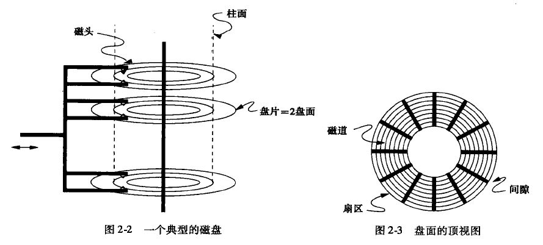

一、磁盘
1、磁盘结构

一个磁盘上有多个盘片和磁头，每个盘片上有两个盘面，每个盘面有多个磁道，数据就存储在磁道上。
- 磁道：单个盘面上的同心圆;
- 柱面：所有盘面上半径相同的磁道组成的柱面;
- 扇区：单个盘面上被间隙分割的片段，间隙用来表示山区的起始位置;
- 磁头：每个盘面上有一个磁头，它悬浮在盘面上但不与盘片接触，所有磁头一同移进移出;
因此一次读取可以同时读出同意柱面上的所有数据。
2、磁盘存取过程
典型的磁盘存取数据需要3步，每一步都会有延迟;
- 磁头定位在数据所在柱面，所需时间为寻道时间;
- 盘面上数据所在的扇区旋转到磁头，所需时间为旋转延迟;
- 磁头进行数据读取操作，所需时间为传输延迟;
1 | 磁盘的延迟=寻道时间+旋转延迟+传输延迟 |
磁盘的平均传输延迟在10ms左右
3、加速数据访问
- 数据块放到同一柱面上，减小寻道时间;
- 将数据放到多个磁盘上，增加同一时刻访问数据的磁头数量、同时降低磁盘的旋转延迟;
- 磁盘调度算法，选择最优的磁盘块读写顺序;(电梯算法)
- 预先将磁盘块中的数据放到主存储器中，加快访问速度;
二、磁盘故障
1、故障种类
- 间接性故障：某次尝试读写一个扇区没有成功，但经过多次尝试又可以成功读写；
- 介质损坏：磁盘上的二进制位永久损坏，不管尝试多少次都无法成功读写；
- 写故障：既不能正确的写，也无法检索先前写入的扇区，可能原因是供电中断；
- 磁盘崩溃：整个磁盘永久不可读；
2、故障检测及恢复
- 校验和：奇偶校验、hash校验；
- 稳定存储：扇区是成对的，对于一个内容X，用两个扇区XL、XR来存储。
1) 写X的值到XL，并检查写入的状态是否为“好”。如果不是“好”，
则执行若干次写操作值到操作结果为“好”；如果若干次操作后结果仍然不是“好”，则转到2);
2) 对XR执行步骤1); - 镜像：对所有磁盘进行镜像备份，这样其中一个损坏之后可以从另一个磁盘上恢复数据；
- 数据盘：冗余盘=1：1；
- 每个数据盘损坏都可恢复数据;
- 奇偶块：磁盘分为数据盘和冗余盘，冗余盘上存放着数据盘上对应块的校验信息，即冗余盘第i块存放着所有数据盘上第i块数据模2运算后的校验结果。
- 数据盘：冗余盘=n：1;
- 其中一个盘损坏可以通过其它盘的数据进行恢复，如果超过1个盘损坏则数据无法恢复；
计算过程：假定有3块数据盘和1块冗余盘，初始时刻4个磁盘的第i块数据如下（假定磁盘上1块数据为1 Byte大小）：